:(
Your PC ran into a problem and needs to restart. We're just collecting som error info, and we'll restart for you.
101% complete

For more information about this issue and possible fixes, visit https://www.windows.com/stopcode
If you call a support person, give them this info:
Stop Code: